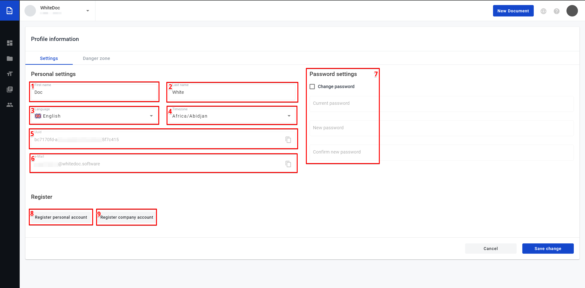
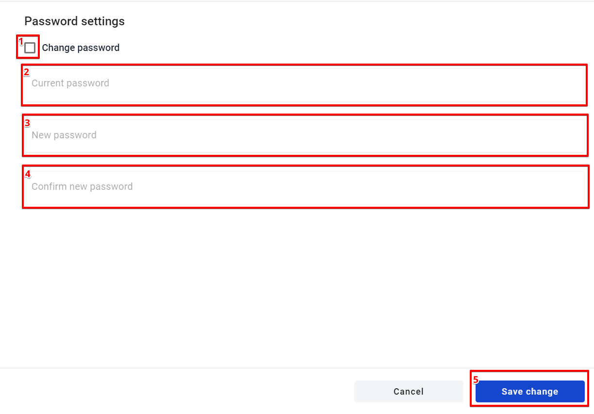
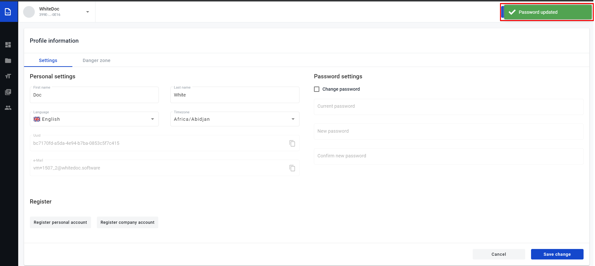
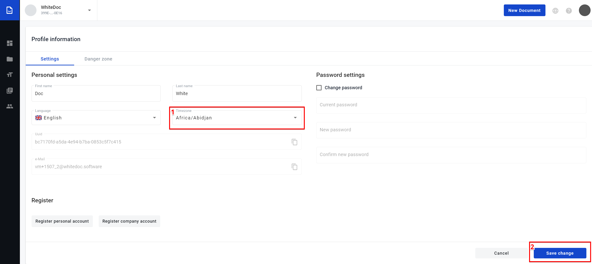

User profile¶
Сontents:
User profile page allows:
Update profile settings.
Register personal accounts.
Register company accounts.
Delete profile.
To open user profile page navigate to https://staging.whitedoc.space/profile .
On Settings tab you can edit (1) First name/(2) Last name, (3) change language, (4) change timezone, (7) change password, start process for (8)register personal account, start process for (9)register company account. Fields (5) Profile UUID, (6) e-Mail not editable.
{kind=link}
On Danger zone tab you can start process for (1) delete user profile.

Edit profile settings¶
1. To start edit (1) First name/(2) Last name, just focus on necessary field which you want to edit, make changes in this field and click on “Save change” button.

2. To change password need select checkbox(1) otherwise fields (2), (3), (4) will be unavailable. After checkbox (1) selected input current password in field (2), new password input in field(3) for confirm new password repeat input new password in field (3). If all input data correct button (5)Save change will be available and you can confirm change password to click on this button.
{kind=link}
If password successfully changed the notification message will show at the right corner of the page.
{kind=link}
3. To change language click on field (1)Language, after that will be open drop down menu where you can select language which supported our system. For confirm this changes click on (2)Save change button.

4. To change timezone click on field (1)Timezone, after that will be open drop down menu where you can select interested you timezone. For confirm this changes click on (2)Save change button.
{kind=link}
To copy the (1)Profile UUID or (2)e-Mail click on button (3)Copy.

If profile successfully edited the notification message will show at the right corner of the page.

Register personal account¶
To register new personal account click on (1)Register personal account button.
Modal window of the personal account creation opens. Enter a name of the Account in field(2).
Select checkbox (3)”I agree with Terms and conditions and Privacy policy”
Click on the button (4)“Create” (the state of the “Create” button will change after name enters and selected checkbox).

5.After successful account creation, also created mailbox for this account with same name and in the right corner of the page will show message.

Register company account¶
To register new company account click on (1)Register company account button.
Modal window of the personal account creation opens. Enter a name of the Account in field(2).
Enter Individual taxpayer number in field (3).
Enter a name of the mailbox in field (4).
Select checkbox (5)”I agree with Terms and conditions and Privacy policy”
Click on the button (6)“Create” (the state of the “Create” button will change after name enters and selected checkbox).

5.After successful account creation, also created mailbox for this account with same name and in the right corner of the page will show message.
Delete user profile¶
To delete user profile go to Danger zone tab. User deletion profile process has two flow.
After User profile deletion will be deleted all Accounts where user has role “Account owner” and all data which related to these accounts.
User can keep all Accounts and all data which related to these accounts after User profile deletion.
{kind=link}
Delete User profile, Accounts and all related data
Click on (1)Delete button
Enter the e-Mail in upper case to the field (2) in the modal window which opens after click on “Delete” button.
Click on button (4)Confirm for confirm decision to delete user profile, Accounts and Mailboxes.
After deletion user profile you will be logout and redirected to login page.
Delete User profile, keep Accounts and all related data
Before delete user profile you should assign a new account owner to all accounts where you have this role(Account owner).
After that you should go to Danger zone tab in user profile page and click on (1)Delete button.
Enter the e-Mail in upper case to the field (2) in the modal window which opens after click on “Delete” button.
Select checkbox (3) Keep Account and Mailboxes.
Click on button (4)Confirm for confirm decision to delete user profile.
6. If all Accounts where you have role “Account owner” has other owners your profile will be deleted, you will logout and redirected to login page, otherwise you will observe error message in the right corner of the page.

After successful user profile deletion in the right corner of the page will show message. For repair access to our application you should register new user.

Warning
Please note! Behaviour of data after deleting a user profile